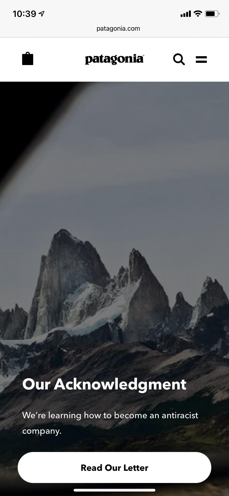

Rule of Thirds
On this page we can see the image of the mountain that is slightly off to the right. This is a great example of the Rule of Thirds and how it is simply more interesting and draws in the attention of the viewer.
On this page we can see the image of the mountain that is slightly off to the right. This is a great example of the Rule of Thirds and how it is simply more interesting and draws in the attention of the viewer.
Apple is the perfect picture of clean design. On this page we can see how the slick white, clean feel of the page promotes a classy, professional feel. Because it isn't cluttered or chaotic, it promotes a simple lifestyle that the customer believes they can obtain throught the IPhone.
Visual Hierarchy is used on target's site by drawing our attention to the primarily blue coffee machine that is surrounded by white. Then we are drawn to the "Fall Warm Up" and then the "Save $10" in bright red under the darker red.